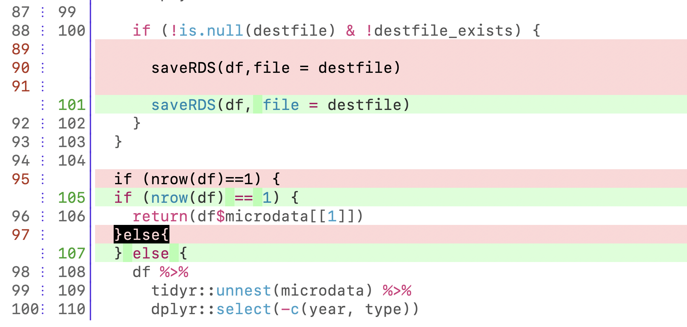

flowchart LR
B((1-Open issue))
B --> C{2-In scope?}
C -->|No| E{3-Exception?}
C -->|Yes| D[4-Submit]
E -->|Yes| D
E -->|No| G((5-Close issue))
rOpenSci Software Peer Review Workshop
Workshop Introduction
License: Attribution-NonCommercial 4.0 International
Main Objectives
Day 1
- Familiarize yourself with the stages and qualities of the process
- Practice proposing software for review
Day 2
- Practice submitting software for review
Day 1 Plan
- Workshop introduction
- End-to-end process introduction
- Comparison with academia
- Proposing and submitting software for review
- {pkgcheck}
- Code of conduct and communication
- Break
- Proposing software for review
- Opening an issue
- Kind and constructive communication
- Questions and answers
Review Process Overview
About how we work with software and people
Comparison with Academia
In academia and at rOpenSci:
- What is the motivation of an author or reviewer?
- What other roles participate?
- When is work accepted or rejected?
- On what platform are comments exchanged?
- What kind of communication is expected?
Proposing Software for Review
Submitting Software for Review
flowchart LR
B((1-Open issue))
B --> C[2-Review]
C --> D{3-Ready?}
D -->|No| C
D -->|Yes| E((Publish))
{pkgcheck}: Usage in an Issue
@ropensci-review-bot check package{pkgcheck}: Local Usage
Installation
options (repos = c (
ropenscireviewtools = "https://ropensci-review-tools.r-universe.dev",
CRAN = "https://cloud.r-project.org"
))
install.packages("pkgcheck")Example
package <- "/path/to/package"
results <- pkgcheck::pkgcheck(package)
results
summary(results)Code of Conduct
- Our community is our greatest asset
- Our diversity is our strength
- We do not tolerate any form of harassment
Kind and Constructive Communication
Offer
- Safety
- Suggestion/Decision
- Follow-up
Kind and Constructive Communication
Explain how and why the package fits into these categories.
@author: I couldn’t find a category that fit perfectly, so I created a new category.
On a scale of 1 to 10, how many points would you give each response?
Response 1
@editor:
@author, Unfortunately our categories are pre-defined. We hope to expand them gradually, but we cannot accommodate individual packages.
Response 2
@editor:
@author, thank you for your inquiry. The package looks very interesting but unfortunately it’s outside the scope of rOpenSci’s current categories. Our categories are pre-defined. We hope to expand them gradually, but we cannot accommodate individual packages.
Response 3
@editor:
@author, thank you for your inquiry. The package looks very interesting but unfortunately it’s outside the scope of rOpenSci’s current categories. Our categories are pre-defined. We hope to expand them gradually, but we cannot accommodate individual packages.
I would recommend reviewing and publishing the package in the Journal of Open Source Software.
I hope we can work with you on another package soon.
Break 10’
Proposing Software for Review
Opening an Issue
Open an issue to propose software for review in the practice repository
Use your own package or any of these:
- {agroclimatico}: Climate and Hydrological Indices and Statistics
- {eph}: Argentina’s Permanent Household Survey Data and Manipulation Utilities
- {karel}: Learning programming with Karel the robot
Kind and Constructive Communication
{karel} is outside the scope of rOpenSci categories (it was reviewed as an exception through the champions program)
Assume the role of editor
Write a kind and constructive comment, notifying the author that the package is outside the scope of rOpenSci
Recommend reviewing and publishing it in the “Journal of Open Source Education”
Questions and Answers
-
Generate questions about the process of proposing software for review. For inspiration you can explore:
Vote with
+on 3 questions from other peopleAnswers
Day 2 Introduction
What did we see on day 1? What are we going to see today?
Day 2 Plan
- Review
- Preparing a package
- Reviewing a package: Introduction
- Break
- Reviewing a package: Activity
- Responding to a review
- Questions and answers
Review: Proposing Software
The karel package teaches programming. Its objective is outside the scope of rOpenSci. It was proposed for review in 2023, during the champions program.
Was it correct for it to have been reviewed at rOpenSci?
- No because it doesn’t fit the scope
- Yes because although it doesn’t fit the scope it’s an exception
- Yes because rOpenSci doesn’t reject packages
Proposing software for review
flowchart LR
B((1-Open issue))
B --> C{2-In scope?}
C -->|No| E{3-Exception?}
C -->|Yes| D[4-Submit]
E -->|Yes| D
E -->|No| G((5-Close issue))
Review: Communication
Why do we prefer the second response?
- Actually we prefer the first one because it communicates the same decision but is shorter.
- Because it’s more politically correct.
- Because it demonstrates that rOpenSci is a safe space to make inquiries, suggests an alternative forum, and invites future contributions.
Response 1
@author, Unfortunately this package is outside rOpenSci’s current scope.
Response 2
@author, Thank you for your inquiry. Your package looks very interesting, but unfortunately it doesn’t seem to fit rOpenSci’s current categories. I would recommend publishing it in the Journal of Open Source Software, the r-multiverse or other repositories. And if you have another package or want to explore how to contribute in other ways, we’ll be happy to guide you.
Submitting Software for Review
Preparing a Package
Generate, interpret, and respond to {pkgcheck} results
Installation
options (repos = c (
ropenscireviewtools = "https://ropensci-review-tools.r-universe.dev",
CRAN = "https://cloud.r-project.org"
))
install.packages("pkgcheck")Use any package, e.g. {saperlipopette}
Clone it
git clone https://github.com/ropensci-training/saperlipopette
cd saperlipopette# pak::pak()
out <- pkgcheck::pkgcheck()
summary(out)
outImprovements
# install.packages("codemetar")
# install.packages("usethis")
# Has a 'codemeta.json' file
codemetar::write_codemeta()
# Has a 'contributing' file
usethis::use_tidy_contributing()
# Package has at least one HTML vignette
usethis::use_article("saperlipopette")
# All functions have examples
#' @examples
#' path <- withr::local_tempdir()
#' create_all_exercises(path)
# R CMD check found 1 error
usethis::use_package("parserdate")Reviewing a Package
Propose (only) one improvement. Use the review template.
You can use your package or any of these – before the review:
{agroclimatico}: Climate and Hydrological Indices and Statistics
git clone https://github.com/ropensci/agroclimatico
cd agroclimatico
git checkout -b antes d537dd20{eph}: Argentina’s Permanent Household Survey Data and Manipulation Utilities
git clone https://github.com/ropensci/eph
cd eph
git checkout -b antes 707cd24c{karel}: Learning programming with Karel the robot
git clone https://github.com/ropensci/karel
cd karel
git checkout -b antes 4b057e67Examples
{eph}: Use an automatic code formatter (review - commit).
Please use an automatic code formatter (e.g.,
usethis::use_tidy_style()). It’s useful to see that the style is consistent and follows a popular style guide like the “tidyverse style guide” (https://style.tidyverse.org/). This helps avoid thinking about style and saves mental energy for noticing more important things. Here are some examples of style violations:

{eph}: Show the output of examples in README (review - commit).
In the “Usage” section, please show the results so they can be seen without needing to install the package and run the code.

{agroclimatico}: Rename functions (review - commit).
a slight name change could be considered to avoid confusion

{agroclimatico}: Group functions (review - commit).
A suggestion to make the overall functionality of the package clearer is to group the functions in the index by topic.

{karel}: Express the package’s need in README (review - commit).
Add statement of need. The
Who is Karel?section of the README hints at the need but does not describe it explicitly.

Responding to a Review
Combines skills we already practiced.
Examples of review and response in {agroclimatico}
Review by @VeruGHub (reviewer)
Safety
First of all, I want to thank you for the opportunity to review this package and I hope the comments help improve the aspects the authors consider appropriate.
Suggestion/Decision
I think some formal aspects of the documentation can be improved. To begin with, the package’s functionality is not completely defined in the documentation (Readme) … Improving these descriptions and including defensive programming related to the arguments (generally missing) would help users a lot.
Response by @paocorrales (author)
Safety
First of all, thank you very much @pmnatural and @VeruGHub for the review and comments.
Suggestion/Decision
I incorporated the comments and suggestions into the package.
Follow-up
I hope I didn’t forget anything, I await your comments!
Example of pushback on a suggestion in {eph}
Response by @caropradier (author)
Safety
@lidefi87 thank you again for your efforts!
Suggestion/Decision
Regarding the function names, I would try not to make major modifications so as not to disrupt the workflow of our current users (approximately 30 thousand people use the package and I would like to avoid causing them inconvenience if it’s not something fundamental for the package’s functionality). However, I agree that it’s a good practice, and I’ll keep it in mind when adding new functions.
Questions
Thank You!
Want to review a package? Volunteer here
Resources
Workshop
Communication
Review
Blogs about the review process
- Software Review, Perspectives from an Academic
- First-time Experiences Reviewing rOpenSci Packages
- So You (Don’t) Think You Can Review a Package
Champion packages in Spanish